关于前后变速器的安装与调整
原文：
- http://wenku.baidu.com/view/6a102ac66137ee06eff9181a.html
- http://www.77bike.com/bbs/read.php?tid=32698
说到运动自行车，我们就不得不谈谈前后变速器，作为运动自行车不可或缺的组件，变速器的地位还是非常重要的。试想用一辆单飞车去爬天文台的大坡，我想更多的车友还是愿意找一辆变速车的吧!既然变速器对于运动车如此重要，那么了解变速器的调整也就变得十分重要了。一辆变速精准的运动车会给你的骑行带来更多的乐趣。
组成
-
下面我们就来谈谈运动车的变速器吧:运动车的变速器一共由这几部分组成:
- 指拨 (用于调整变速的档位，通常有两个，分别控制前后拨链器)
- 前拨 (用于调整链条在牙盘上的位置，通常有3个档位)
- 后拨 (用于调整链条在飞轮上的位置，通常有8档和9档之分)
- 变速内线 (用于链接指拨和前后拨)
- 变速外线管 (用于引导和保护内线)。
-
精简的拨链器结构，拨链器结构其实很简单，大家直接看原理图（以S社正拉后拨为例）。
- 后拨导轮：后拨导轮的作用就是固定、移动链条的位置，让链条能在某一档位上稳定运行或者让链条移动到不同的档位。我们调节后拨，实际上就是在调节后拨导轮。
- 变速线（变速线调节钮）：后拨导轮的运动，就是由变速线的收放决定的。变速线的调节，直接决定了变速的精确度，是调节变速器最重要最费时的工作。
- 限位螺丝：限位螺丝主要的作用就是防止导轮运动超出其工作范围，产生掉链。除了极限的两个档位，并不会对变速精确度产生影响（很多人对这个问题有所误解，经常能见到中间档位变速有问题，却在调节限位螺丝）。
- B张力螺丝：B张力螺丝作用是调节后拨导轮（的运动轨迹）与飞轮齿片之间的距离。 这颗螺丝的调节极其重要，但却往往被新手忽略，请大家重视起来！
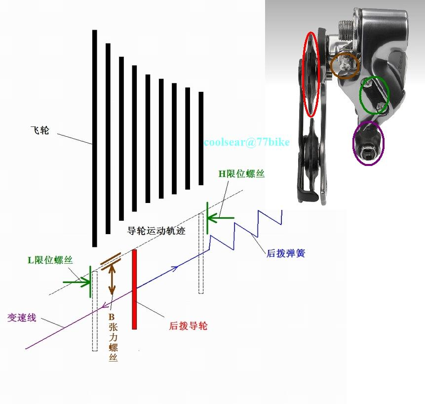
安装说明
安装位置
了解了变速套件的组成，下面我们来看看个部分的安装位置:
- 指拨:通常安装在把横上，方便双手的控制。
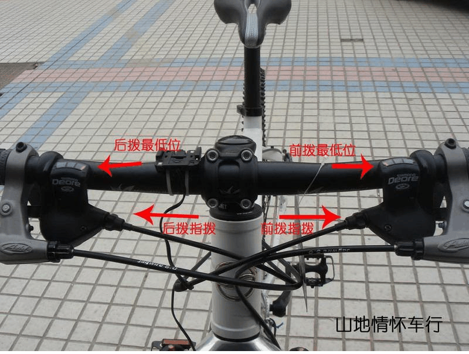
- 前拨:通常安装在车架的立管上，位于牙盘的上方。
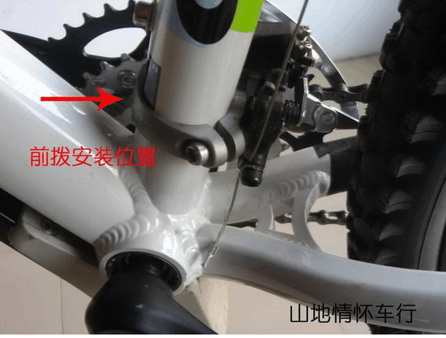
- 后拨:通常安装在车架的右后方的勾爪上，有固定的螺孔。
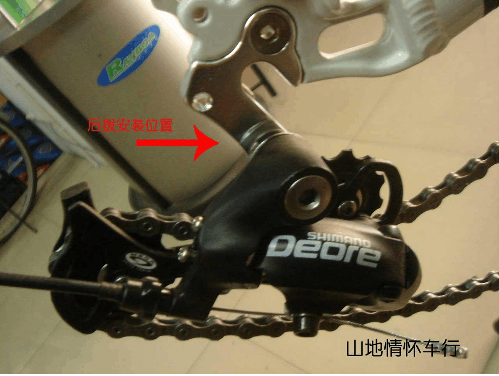
安装注意事项
- 指拨:前拨在左手，后拨在右手
- 前拨:外拨链片高过牙盘的最高齿约2-3mm，一般在前拨首次安装的时候都会在拨链片上有安装校对的贴纸，安装到位后即可撕去
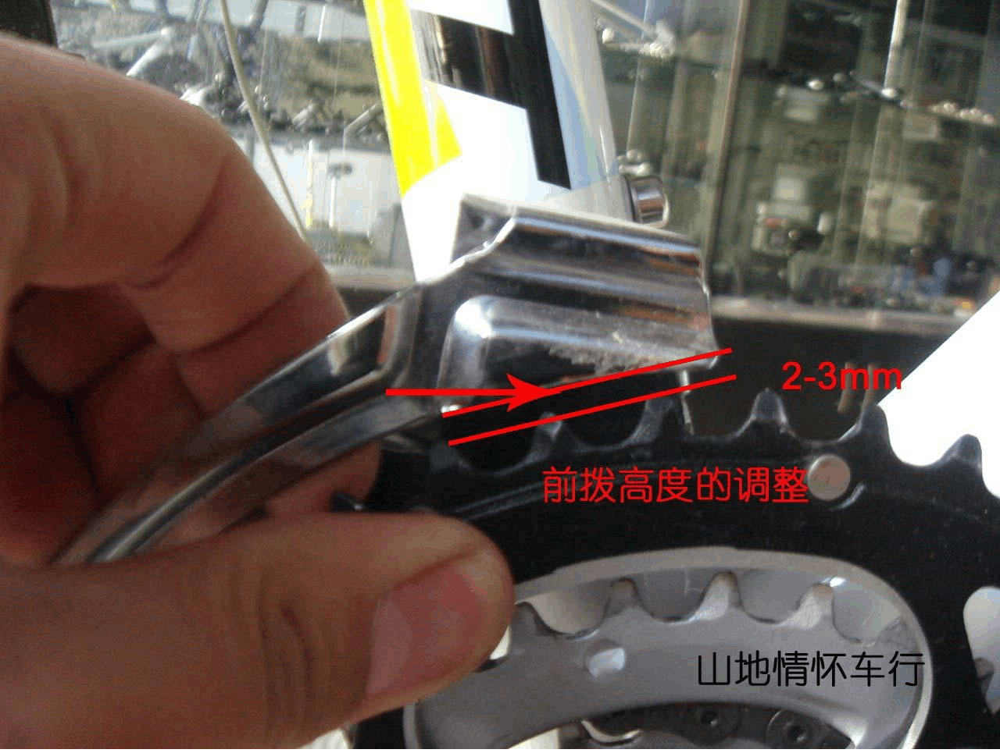
- 后拨:注意将后拨张力调整螺丝放置在勾爪的上方，以免顶坏勾爪
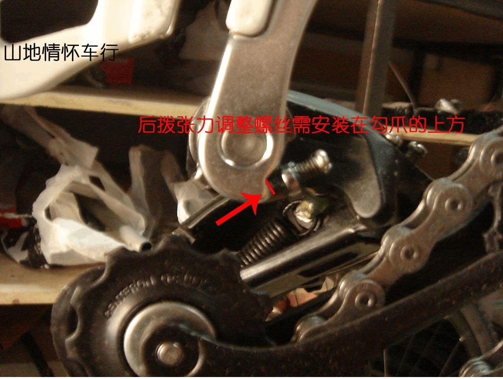
- 外线管:视不同的车架进行安装，通常前拨线由左到右进入，后拨由右到左进入
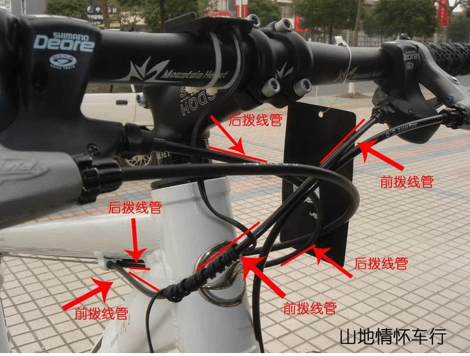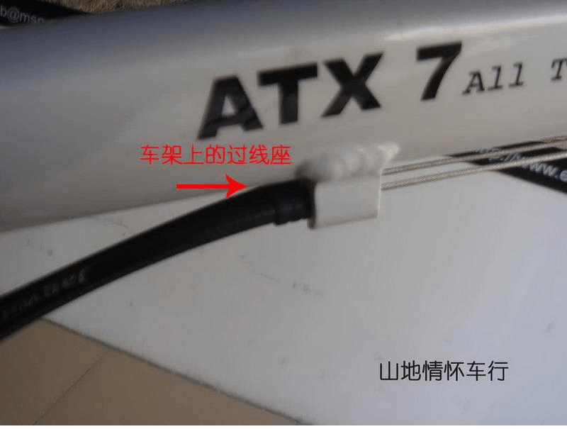
- 变速内线:首先穿过指拨，经由变速外线，分别到达前拨和后拨。
了解变速组件
下面让我们来了解一下各个组件吧:
-
首先是前拨: 前拨上有两颗定位螺丝，一个标示为H，一个表示为L，分别代表了前拨的高低两个限位
- L 代表了低限位，也就是前拨在最小盘时所在的位置，通常当链条处在前面最小盘，后面最大飞轮的时候，链条距离前拨的内拨链片大约2-3mm。
- H 代表了高限位，也就是前拨在最大盘时的位置，通常当链条处在前面最大盘，后面最小飞轮的时候，链条距离前拨的外拨链片大约2-3mm。
-
接着是后拨: 在后拨的后方一共有3颗螺丝和一个微调螺丝。由上至下分别为:
- 后拨张力调整螺丝
- 高速限位螺丝H:用于调整后拨在最小飞轮片时的位置，通常保持上导轮的中心线，与最小飞轮片的外沿在一条直线上。
- 低速限位螺丝L:用于调整后拨在最大飞轮片时的位置，通常保持上导轮的中心线，与最大飞轮片的外沿在一条直线上。
- 后拨线张力微调旋钮:用于对后拨的位置进行微调，当变速时飞轮上链不畅时，逆时针调整微调旋钮，当下链不畅时，顺时针调整微调旋钮。
- 后拨张力调整螺丝: 用于调整后拨的上导轮与飞轮的间距。向内旋入时，可使导轮与飞轮的间距加大，反之减小。
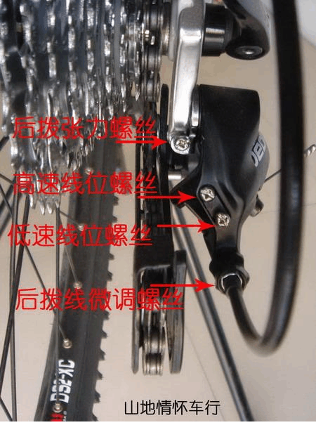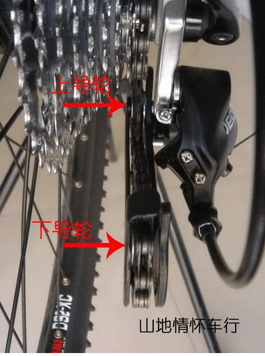
安装
下面我们来详细的介绍一下变速系统的安装和调试。我们以初装车安装变速系统为例:
- 第一步: 将指拨，前拨，后拨，以及线管安装到位，检查指拨是否都处于最小档，左手在1挡，右手在8或9档，没有档位显示的指拨，要确保红色的指针都处在最内侧。
- 第二步: 调整后拨限位，在没有安装链条的情况下，是比较容易调整后拨限位的，这时比较容易确定导轮中心线与最大和最小飞轮的位置。确保上导轮的中心线在H位上处于最小飞轮的外沿，而在L位上的时候处于最大飞轮的外沿。将后变速线微调螺丝先往顺时针方向全部旋入，再以逆时针方向回旋两圈，以确保足够的微调行程。
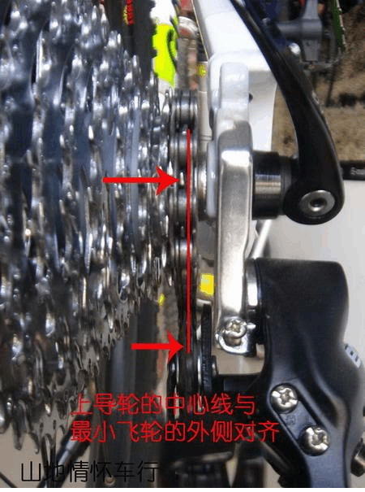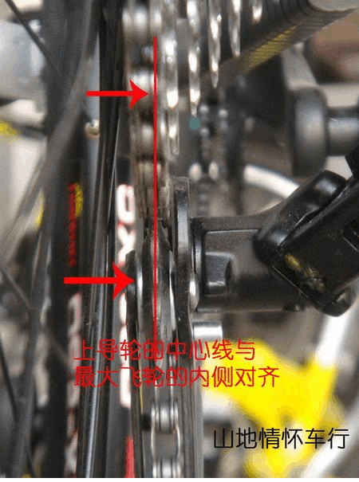
- 第三步: 调整前拨的高低位置，用手向外拉动前拨，观察牙盘的最高齿与前拨外拨链片的间距，确保间距在2-3mm左右。从上方观察前拨，确保前拨的外拨链片与牙盘的盘片平行。
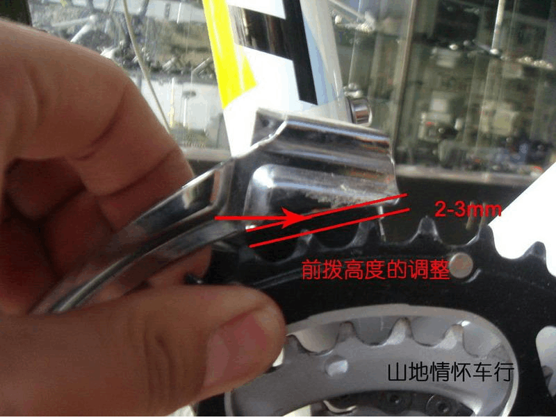
- 第四步: 将前拨线与后拨线固定好，用左手抓紧后拨，用力拉动位于车架上管上的后变速线，确保所有的线帽都收紧到位，随后使用同样的方法，收紧前拨的线管。接着松掉前后内线。
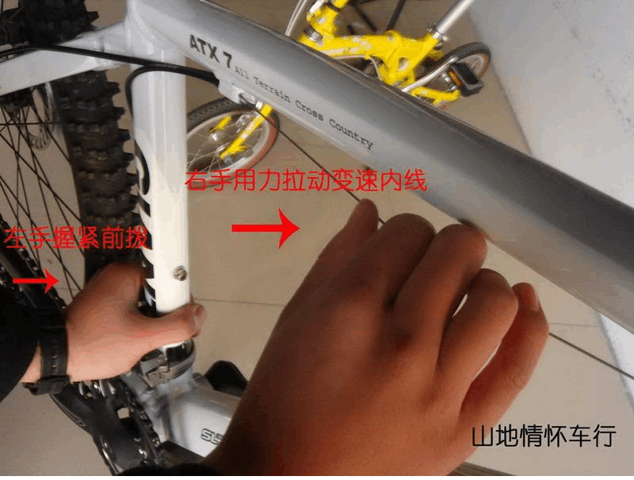 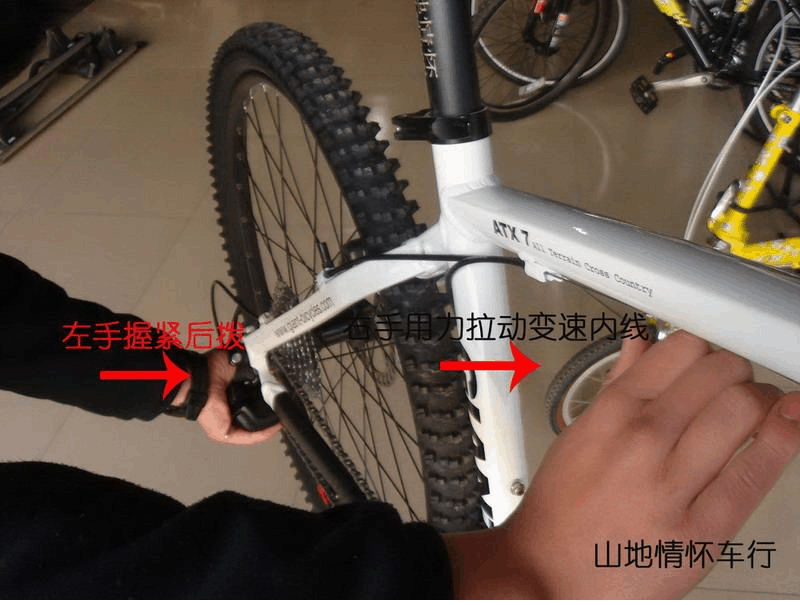
- 第五步: 将链条安装到位。
- 第六步: 将后拨线重新上紧，变速至最大飞轮片，调整前拨的L螺丝，让前拨的内拨链片距离链条的内侧约2-3mm，随后上紧前拨线，将链条再调至最小飞轮和最大牙盘，调整前拨H螺丝，使前拨的外拨链片距离链条外侧2-3mm。
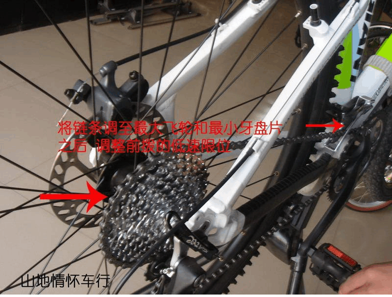 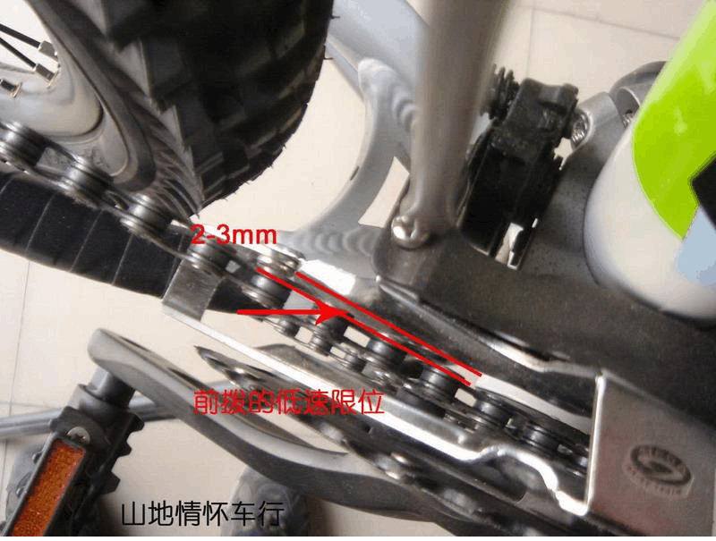 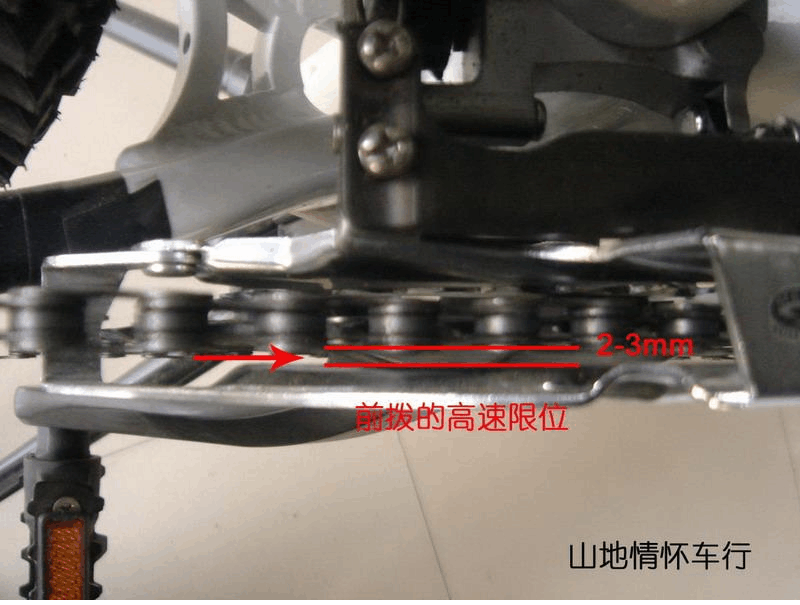
此时，变速系统安装到位。
调试
-
对于已经安装好，并骑行一段时间后出现变速不准的运动车，在进行调试的时候，首先要确认：
- 前后拨的限位是否正常；
- 车架后勾爪有没有向内或向外变形；
- 变速内线是否过于松动；
- 前拨是否与牙盘平行，高度是否合适。
-
在以上几项检查确认无误之后:
- 如果后拨上链不畅，则逆时针旋动后拨线微调螺丝，直至上链顺畅。
- 如果后拨下链不畅，则顺时针旋动后拨线微调螺丝，直至下链顺畅。
- 如果前拨上链不畅，则逆时针旋动位于左手指拨上的前拨线微调螺丝，直至上链顺畅。
- 如果前拨下链不畅，则顺时针旋动位于左手指拨上的前拨线微调螺丝，直至下链顺畅。
- 每次旋动的幅度大约在4分之1，或半圈。
- 在指拨上各有一个微调螺丝，可以用来在骑行的过程中，不用下车就可以对前后的变速进行调节。
- shimano的后拨上是有一个微调螺丝的，但是sram的后拨就没有了，只可以在指拨上进行调节。这是因为各个厂商的设计不同导致的，但是调整变速的方法是一样的没有任何的区别。
这里介绍的主要是山地车的变速器安装和调整，相对的还有公路车的变速系统，从安装的角度来说，山地和公路的安装没有太多的区别，各个限位的调整也是一样的，只是公路车的指拨上是没有微调螺丝的，通常公路的微调螺丝是在车架的下管上的，调整的方法与山地一样。
-
还要说说的就是为什么会出现变速不准的情况呢??
- 车子在摔倒的过程中，变速器遇到了撞击，导致安装位置的偏移，从而发生变速不准。
- 发力时的强行变速，导致链条将变速器挤压变形，导致变速不准。
- 安装时没有预拉内线，在后来的骑行中，变速内线松动，导致变速不准。
- 长时间的没有清理变速内外线管，导致堵塞，导致内线无法顺畅的来回拉动，从而变速不准。
以上的这些情况，都会引起变速的不精确。
时常的保养和调试，把车当做是你的好朋友，爱惜自己的运动自行车，关心他们，让他成为你生活中的一部分，我相信你自行车朋友能够让你获得更多的乐趣，让我们享受骑行的乐趣，去经历更多的人生旅途吧!!
变速器的调节
【裸男小教室】
初级
下边讲一讲调节变速器的具体步骤：
开始状态：后拨链器安装好，尚未拉线。
第一步：调节H限位螺丝。后拨链器安装好以后，导轮就处于H（高）位，所以我们拿起螺丝刀，直接拧H限位螺丝，让导轮和最小齿片对齐。
第二步：调节L限位螺丝。用手把拨链器推到L（低）位，保持不放（一定要推到底，要不然就不准了），拿起螺丝刀拧L限位螺丝，让导轮和最大齿片对齐。 这一步可以放在拉线之后做，但我个人还是喜好把两个限位螺丝都调好之后再拉线。
第三步：拉线。拉线就是固定变速线啦，很简单。注意这时指拨的档位要在所对应的最高档。小Tip：拉线的时候，变速线调节钮一定要拧到最低位，要不然变速线都没法绷紧，到时候就别说调节余量了。
第四步：调节变速线。用变速线调节钮调节变速线，让导轮在每一档都能对齐对应的齿片。（只要有一档对齐了，其余档都能对齐，但不要以极限档位为标准，在中间档位对齐吧）
并不是每个拨链器（所有前拨都没有）都有变速器调节钮，但在整个变速线的走线中，肯定会有变速器调节钮的存在，比如有的是在指拨上，有的是在过线座上，有的直接串在变速线上等。
第五步：调节B张力螺丝。这时装上链条，再调节B张力螺丝，让导轮和飞轮齿片保持一个合适的距离。什么是合适的距离？在链条运行正常的情况下，距离越小越好，一般来讲，6mm是一个极限值。由于导轮的运动轨迹并不能与飞轮弧度重合，所以我们只需要在后拨导轮和飞轮离得最近的那一档调节B张力螺丝即可。比如一楼图中，目测可知1档（最大齿片），后拨导轮和飞轮离得最近，所以在1档调节B张力螺丝即可。注意，不同后拨和飞轮的搭配会有所不同。题外话，这也是强调公路飞搭配公路后拨，山地飞搭配山地后拨的原因，就是为了让导轮运动轨迹和飞轮弧度尽量好的吻合。
第六步：微调变速线。摇动曲柄，不断反复变速，微调变速旋钮，直到每一档变速都流畅即可。例：以一楼图为准，从右向左（拉线、降档）不流畅，意味着线拉得不够，就把线紧一紧；从右向左（拉线、降档）跳档，意味着线拉得太过，就把线松一松......以此类推。
到此，后拨的调整就完成了，怎么样？很简单吧！
前拨调节的原理其实是一模一样的，因为档位少，调节起来比后拨简单。前拨的难点在于安装，这个要说明白就得另外写一篇文章了。
进阶
上述的变速器调节方法严格的说并不严谨，很多细节都有些小问题，所以在这里更加严谨的讲一下变速器调节的一些细节。特别是使用高档变速器的车友，如果不严谨调节变速器，你的钱基本就打水漂了。
第一步：调节H限位螺丝。导轮中心线应该对准最小齿片的外延，而不是两者对齐。
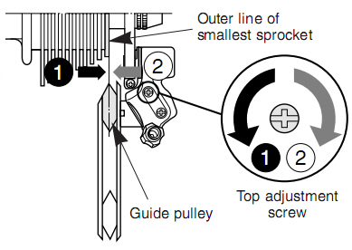
第六步：微调变速线。先解释一个名词，下图中的”play“。个人理解可以翻译成”空程“，即拨动指拨，将要退档（拉线）但还未退档的状态。说白了就是变速变了一半，指头一松又弹回来了的状态。注：进档（放线）没有”play“。
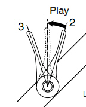
简单的说，就是在最大”play“的时候，链条能和下一档位的齿片接触，即为变速器调节的最佳状态。
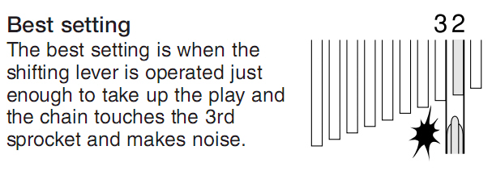